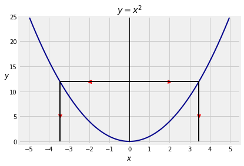

---
redirect_from:
  - "/chapter-16/03-two-to-one-functions"
interact_link: content/Chapter_16/03_Two_to_One_Functions.ipynb
kernel_name: python3
kernel_path: content/Chapter_16
has_widgets: false
title: |-
  Two-to-One Functions
pagenum: 85
prev_page:
  url: /Chapter_16/02_Monotone_Functions.html
next_page:
  url: /Chapter_17/00_Joint_Densities.html
suffix: .ipynb
search: y x sqrt frac w density fx e formula g function square vert align le pi functions let variable both negative fy p frequently non change section because monotone modification positive values near root b text approach begin end value standard normal z possible fw fz seen random comes calculations thus far needed found expectation linear cant directly previous not same developing extends straightforward manner also take account fact mutually exclusive ways event dy happen either components follows where used formal start cdf differentiate sides get our keep eye minus signs second term sure combine correctly extended any every component

comment: "***PROGRAMMATICALLY GENERATED, DO NOT EDIT. SEE ORIGINAL FILES IN /content***"
---

    <main class="jupyter-page">
    <div id="page-info"><div id="page-title">Two-to-One Functions</div>
</div>
    
<div class="jb_cell">

<div class="cell border-box-sizing text_cell rendered"><div class="inner_cell">
<div class="text_cell_render border-box-sizing rendered_html">
<h2 id="Two-to-One-Functions">Two-to-One Functions<a class="anchor-link" href="#Two-to-One-Functions"> </a></h2>
</div>
</div>
</div>
</div>

<div class="jb_cell">

<div class="cell border-box-sizing text_cell rendered"><div class="inner_cell">
<div class="text_cell_render border-box-sizing rendered_html">
<p>Let $X$ have density $f_X$. As you have seen, the random variable $Y = X^2$ comes up frequently in calculations. Thus far, all we have needed is $E(Y)$ which can be found by the formula for the expectation of a non-linear function of $X$. To find the density of $Y$, we can't directly use the change of variable formula of the previous section because the function $g(x) = x^2$ is not monotone. It is two-to-one because both $\sqrt{x}$ and $-\sqrt{x}$ have the same square.</p>
<p>In this section we will find the density of $Y$ by developing a modification of the change of variable formula for the density of a monotone function of $X$. The modification extends in a straightforward manner to other two-to-one functions and also to many-to-one functions.</p>

</div>
</div>
</div>
</div>

<div class="jb_cell">

<div class="cell border-box-sizing text_cell rendered"><div class="inner_cell">
<div class="text_cell_render border-box-sizing rendered_html">
<h3 id="Density-of-$Y-=-X^2$">Density of $Y = X^2$<a class="anchor-link" href="#Density-of-$Y-=-X^2$"> </a></h3><p>If $X$ can take both positive and negative values, we have to account for the fact that there are two mutually exclusive ways in which the event $\{ Y \in dy \}$ can happen: either $X$ has to be near the positive square root of $y$ or near the negative square root of $y$.</p>

</div>
</div>
</div>
</div>

<div class="jb_cell tag_remove_input">

<div class="cell border-box-sizing code_cell rendered">

<div class="output_wrapper">
<div class="output">

<div class="jb_output_wrapper }}">
<div class="output_area">


<div class="output_png output_subarea ">

</div>

</div>
</div>
</div>
</div>

</div>
</div>

<div class="jb_cell">

<div class="cell border-box-sizing text_cell rendered"><div class="inner_cell">
<div class="text_cell_render border-box-sizing rendered_html">
<p>So the density of $Y$ at $y$ has two components, as follows. For $y &gt; 0$,</p>
$$
f_Y(y) ~ = ~ a + b
$$<p>where</p>
$$
a = \frac{f_X(x_1)}{2x_1} ~~~~ \text{at } x_1 = \sqrt{y}
$$<p>and</p>
$$
b = \frac{f_X(x_2)}{\vert 2x_2 \vert} ~~~~ \text{at } x_2 = -\sqrt{y}
$$<p>We have used $g'(x) = 2x$ when $g(x) = x^2$.</p>
<p>For a more formal approach, start with the cdf of $Y$:</p>
$$
\begin{align*}
F_Y(y) ~ &amp;= ~ P(Y \le y) \\
&amp;= ~ P(\vert X \vert \le \sqrt{y}) \\
&amp;= ~ P(-\sqrt{y} \le X \le \sqrt{y}) \\
&amp;= ~ F_X(\sqrt{y}) - F_X(-\sqrt{y})
\end{align*}
$$<p>Differentiate both sides to get our formula for $f_Y(y)$; keep an eye on the two minus signs in the second term and make sure you combine them correctly.</p>
<p>This approach can be extended to any many-to-one function $g$. For every $y$, there will be one component for each value of $x$ such that $g(x) = y$.</p>

</div>
</div>
</div>
</div>

<div class="jb_cell">

<div class="cell border-box-sizing text_cell rendered"><div class="inner_cell">
<div class="text_cell_render border-box-sizing rendered_html">
<h3 id="Square-of-the-Standard-Normal">Square of the Standard Normal<a class="anchor-link" href="#Square-of-the-Standard-Normal"> </a></h3><p>Let $Z$ be standard normal and let $W = Z^2$. The possible values of $W$ are non-negative. For a possible value $w \ge 0$, the formula we have derived says that the density of $W$ is given by:</p>
$$
\begin{align*}
f_W(w) ~ &amp;= ~ \frac{f_Z(\sqrt{w})}{2\sqrt{w}} ~ + ~ \frac{f_Z(-\sqrt{w})}{2\sqrt{w}} \\ \\
&amp;= ~ \frac{\frac{1}{\sqrt{2\pi}} e^{-\frac{1}{2}w}}{2\sqrt{w}} ~ + ~ \frac{\frac{1}{\sqrt{2\pi}} e^{-\frac{1}{2}w}}{2\sqrt{w}} \\ \\
&amp;= \frac{1}{\sqrt{2\pi}} w^{-\frac{1}{2}} e^{-\frac{1}{2}w}
\end{align*}
$$<p>By algebra, the density can be written in an equivalent form that we will use more frequently.</p>
$$
f_W(w) ~ = ~ \frac{\frac{1}{2}^{\frac{1}{2}}}{\sqrt{\pi}} w^{\frac{1}{2} - 1} e^{-\frac{1}{2}w}
$$<p>This is a member of the family of <em>gamma</em> densities that we will study later in the course. In statistics, it is called the <em>chi squared density with one degree of freedom</em>.</p>

</div>
</div>
</div>
</div>

 


    </main>
    